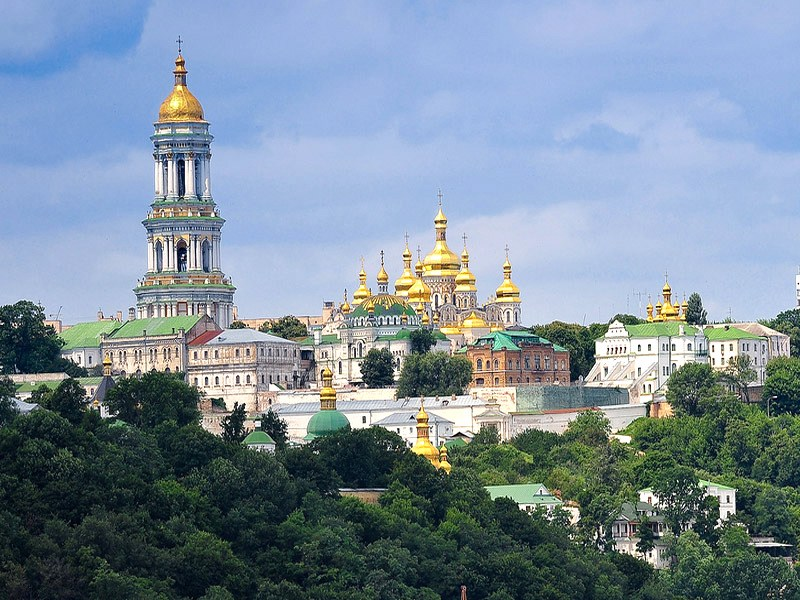
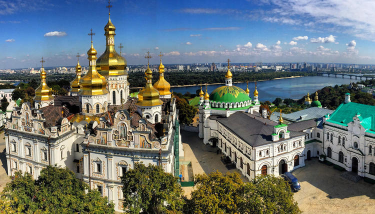
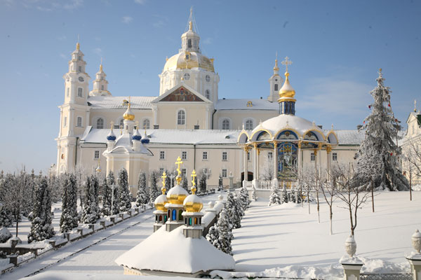

Відіграючи значну роль в об’єднанні східних земель як духовний, соціальний, культурний та просвітницький центр, Києво-Печерська лавра мала заслужену славу не лише на території Київської Русі, а й у Польщі, Вірменії, Візантії, Болгарії та інших країнах...
Сьогодні Національний Києво-Печерський історико-культурний заповідник – найбільший музейний комплекс України, де зосереджено 144 споруди, 122 з яких – пам’ятки історії і культури. Серед них – 2 унікальних підземних комплекси, храми, пам'ятки архітектури XI–XIX ст., численні виставкові приміщення.
Також на території заповідника розміщені музеї: Музей книги і друкарства України, Музей українського народного декоративного мистецтва, Музей театрального, музичного та кіномистецтва України, Музей історичних коштовностей України. У музеях і фондах можна побачити рукописи старовинних книг, ікони, колекції тканин і вишивок, роботи з дорогоцінних металів, стародавні гравюри та витвори сучасних митців.
На території заповідника знаходиться і Києво-Печерська лавра – видатна пам’ятка не лише української, слов’янської, але й загальносвітової культури. Беручи до уваги винятковість архітектурного ансамблю, роль Лаври у розвитку вітчизняної та світової культури, науки й освіти, 14-та сесія міжнародного комітету ЮНЕСКО у 1990 р. внесла Києво-Печерську лавру до «Списку всесвітньої культурної спадщини ЮНЕСКО».
Києво-Печерська лавра – православний монастир, заснований у 1051 р. монахами Антонієм і Феодосієм поблизу Києва. В ХІ ст. монастир став центром розповсюдження і затвердження християнства у Київській Русі. У ХІІ ст. монастир отримав статус «лаври» – головного великого монастиря.
Назва лаври «Печерська» походить від слова «печери», бо саме у печерах на її території оселялись перші монахи. Частими відвідувачами печерного монастиря були князь Ізяслав, син Київського князя Ярослава Мудрого та київська знать, яка жертвувала кошти на будівництво наземного храму та келій.
Монахи Києво-Печерської обителі і, насамперед, відлюдники, вирізнялися високою моральністю та подвижництвом. Це притягувало до Лаври освічених людей. Монастир став своєрідною академією православних ієрархів. Тільки до початку XIII ст. з числа його іноків у різні міста Київської Русі було призначено 50 єпископів.
Києво-Печерська лавра зіграла важливу роль у розвитку давньоруської культури, вона була центром літописання. Тут перекладалися на церковнослов’янську мову і переписувалися твори іноземних авторів. У лаврі працювали відомі літописці –Нестор, Никон, Сильвестр. У ХІІІ ст. було укладено „Києво-Печерський патерик” – важливе джерело історії Києва.
Протягом століть на території Києво-Печерської лаври здійснювалося масштабне будівництво. Наприкінці ХІІ ст. навколо Лаври було зведено оборонні стіни (у 1240 р. вони були зруйновані ордами Батия). У 1698—1701 рр. паралельно до них було споруджено нові фортечні стіни з бійницями і баштами. У 1731–1744 рр. зведено велику лаврську дзвіницю, висота якої – 96,52 м. Більшість лаврських споруд датується XVII–XVIII ст. і є прекрасними зразками українського бароко в архітектурі. З XII ст. збереглася майже у первозданному вигляді одна церква – Троїцька надбрамна церква над воротами головного входу в Лавру. Вона вистояла, незважаючи на численні війни, пожежі та інші нещастя, яких зазнавала Лавра впродовж своєї історії.